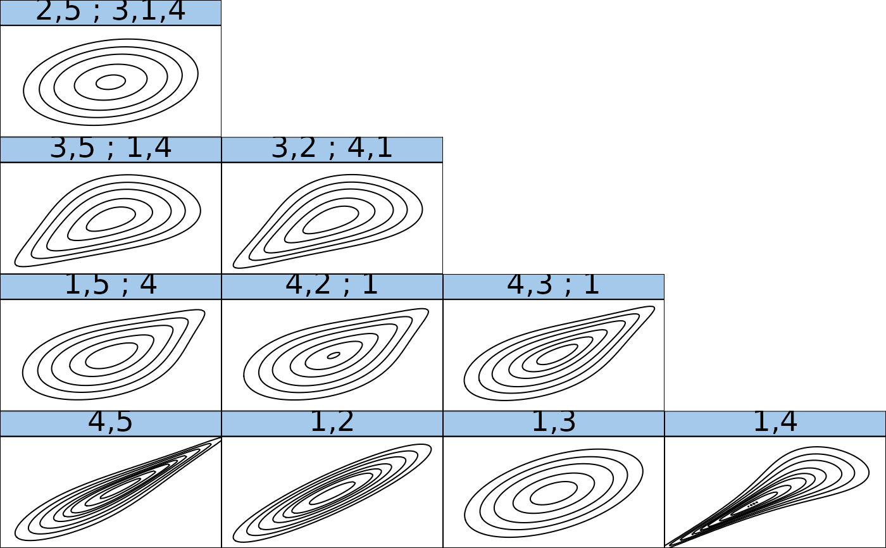

This function creates an RVineMatrix object which encodes an
R-vine copula model. It contains the matrix identifying the R-vine tree
structure, the matrix identifying the copula families utilized and two
matrices for corresponding parameter values.
RVineMatrix(Matrix, family = array(0, dim = dim(Matrix)), par = array(NA, dim = dim(Matrix)), par2 = array(NA, dim = dim(Matrix)), names = NULL, check.pars = TRUE)
| Matrix | Lower (or upper) triangular d x d matrix that defines the R-vine tree structure. |
|---|---|
| family | Lower (or upper) triangular d x d matrix with zero diagonal
entries that assigns the pair-copula families to each (conditional) pair
defined by |
| par | Lower (or upper) triangular d x d matrix with zero diagonal
entries that assigns the (first) pair-copula parameter to each (conditional)
pair defined by |
| par2 | Lower (or upper) triangular d x d matrix with zero diagonal
entries that assigns the second parameter for pair-copula families with two
parameters to each (conditional) pair defined by |
| names | A vector of names for the d variables; default: |
| check.pars | logical; default is |
An object of class RVineMatrix, i.e., a list with the
following components:
R-vine tree structure matrix.
pair-copula family matrix with values as above.
pair-copula parameter matrix.
second pair-copula parameter matrix with parameters necessary for pair-copula families with two parameters.
variable names (defaults to V1, V2, ...).
additional matrices required internally for evaluating the density etc.,
the type of the vine copula structure; possible types are:
"C-vine": all trees consist of a star,
"D-vine": all trees consist of a path,
"R-vine": all structures that are neither a C- nor D-vine,
Kendall's tau matrix,
matrices of lower and upper tail dependence coefficients,
Blomqvist's beta matrix.
For a comprehensive summary of the vine copula model, use
summary(object); to see all its contents, use str(object).
The RVineMatrix function automatically checks if the given
matrix is a valid R-vine matrix (see RVineMatrixCheck).
Although the function allows upper triangular matrices as its input, it will
always store them as lower triangular matrices.
Dissmann, J. F., E. C. Brechmann, C. Czado, and D. Kurowicka (2013). Selecting and estimating regular vine copulae and application to financial returns. Computational Statistics & Data Analysis, 59 (1), 52-69.
# define 5-dimensional R-vine tree structure matrix Matrix <- c(5, 2, 3, 1, 4, 0, 2, 3, 4, 1, 0, 0, 3, 4, 1, 0, 0, 0, 4, 1, 0, 0, 0, 0, 1) Matrix <- matrix(Matrix, 5, 5) # define R-vine pair-copula family matrix family <- c(0, 1, 3, 4, 4, 0, 0, 3, 4, 1, 0, 0, 0, 4, 1, 0, 0, 0, 0, 3, 0, 0, 0, 0, 0) family <- matrix(family, 5, 5) # define R-vine pair-copula parameter matrix par <- c(0, 0.2, 0.9, 1.5, 3.9, 0, 0, 1.1, 1.6, 0.9, 0, 0, 0, 1.9, 0.5, 0, 0, 0, 0, 4.8, 0, 0, 0, 0, 0) par <- matrix(par, 5, 5) # define second R-vine pair-copula parameter matrix par2 <- matrix(0, 5, 5) ## define RVineMatrix object RVM <- RVineMatrix(Matrix = Matrix, family = family, par = par, par2 = par2, names = c("V1", "V2", "V3", "V4", "V5")) ## see the object's content or a summary str(RVM)#> List of 11 #> $ Matrix : num [1:5, 1:5] 5 2 3 1 4 0 2 3 4 1 ... #> $ family : num [1:5, 1:5] 0 1 3 4 4 0 0 3 4 1 ... #> $ par : num [1:5, 1:5] 0 0.2 0.9 1.5 3.9 0 0 1.1 1.6 0.9 ... #> $ par2 : num [1:5, 1:5] 0 0 0 0 0 0 0 0 0 0 ... #> $ names : chr [1:5] "V1" "V2" "V3" "V4" ... #> $ MaxMat : num [1:5, 1:5] 5 2 3 4 4 0 2 3 4 1 ... #> $ CondDistr:List of 2 #> ..$ direct : logi [1:5, 1:5] FALSE TRUE TRUE TRUE TRUE FALSE ... #> ..$ indirect: logi [1:5, 1:5] FALSE FALSE FALSE FALSE FALSE FALSE ... #> $ type : chr "R-vine" #> $ tau : num [1:5, 1:5] 0 0.128 0.31 0.333 0.744 ... #> $ taildep :List of 2 #> ..$ upper: num [1:5, 1:5] 0 0 0 0.413 0.805 ... #> ..$ lower: num [1:5, 1:5] 0 0 0.463 0 0 ... #> $ beta : num [1:5, 1:5] 0 0.128 0.309 0.331 0.748 ... #> - attr(*, "class")= chr "RVineMatrix"summary(RVM)#> tree edge | family cop par par2 | tau utd ltd #> ------------------------------------------------------------ #> 1 4,5 | 4 G 3.90 0.00 | 0.74 0.81 - #> 1,2 | 1 N 0.90 0.00 | 0.71 - - #> 1,3 | 1 N 0.50 0.00 | 0.33 - - #> 1,4 | 3 C 4.80 0.00 | 0.71 - 0.87 #> 2 1,5;4 | 4 G 1.50 0.00 | 0.33 0.41 - #> 4,2;1 | 4 G 1.60 0.00 | 0.38 0.46 - #> 4,3;1 | 4 G 1.90 0.00 | 0.47 0.56 - #> 3 3,5;1,4 | 3 C 0.90 0.00 | 0.31 - 0.46 #> 3,2;4,1 | 3 C 1.10 0.00 | 0.35 - 0.53 #> 4 2,5;3,1,4 | 1 N 0.20 0.00 | 0.13 - - #> --- #> type: R-vine #> --- #> 1 <-> V1, 2 <-> V2, 3 <-> V3, 4 <-> V4, 5 <-> V5## inspect the model using plots# NOT RUN { plot(RVM) # tree structure # }